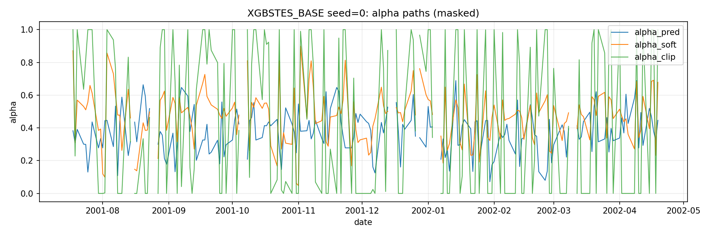
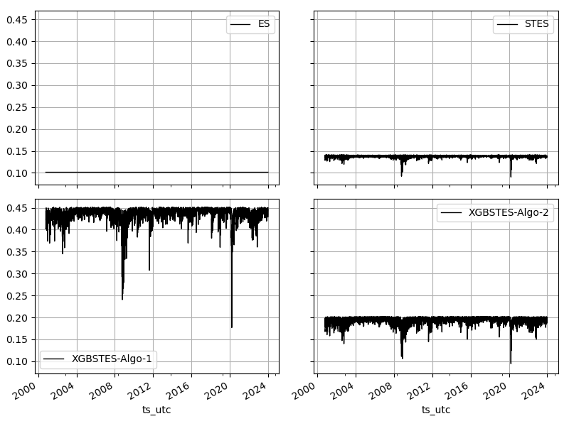

Volatility Forecasts (Part 3 - XGBSTES Algorithm 2)
(Code snippets for this post can be found in the Github repository.) Update: added discussion and a new fitting algorithm
Recap
In the previous post, we extended the Smooth Transition Exponential Smoothing (STES) model from (Taylor 2004) and (Liu, Taylor, Choo 2020) by replacing the linear model in STES with a XGBoost model.
We saw that the XGBoost model has lower MAE and MedAE scores, but generally underperform STES in terms of RMSE. We did not however find out the true cause of this. In this post, we drill down into the cause of this, and propose a different fitting algorithm.
Recall that the XGBSTES model is formulated as
\[ \begin{equation} \begin{aligned} \sigma_t^2 &= \alpha_{t-1} r_{t-1}^2 + (1-\alpha_{t-1})\widehat{\sigma}_{t-1}^2 \\ \alpha_{t-1} &= \mathrm{sigmoid}\left(\mathcal{F}(X_{t-1})\right) \\ \end{aligned} \end{equation} \]
We fit the model by minimizing mean squared error (MSE) between the forecasted variance \[\sigma_t^2\] and realized squared returns.
\[ \mathtt{loss} = \frac{1}{T}\sum_{t=1}^{T}\left(r_t^2 - \widehat{\sigma}_t^2\right)^2 \]
For each time step \[t\], the forecasted variance \[\sigma_t^2\] is a weighted combination of the previous period’s squared return \[r_{t-1}^2\] and the previous forecast \[\widehat{\sigma}_{t-1}^2\]. The weight \[\alpha_{t-1}\] is produced by an XGBoost model applied to the transition variable \[X_{t-1}\] and passed through a sigmoid so it lies in \[(0,1)\]. In other words, we do not predict next-day variance directly; instead, we predict a time-varying update weight and then generate the variance forecast recursively over contiguous blocks of the feature matrix.
Brief Introduction to XGBoost
XGBoost is a general-purpose engine for functional gradient descent. At its core, it optimizes an objective function by iteratively adding functions \[f_t(x)\] (regression trees) to an ensemble. For example, the model at step \[j\] is \[F_j(x) = \sum_{k=1}^j f_k(x)\].
XGBoost does not optimize the loss directly. Instead, at each step \[t\], it approximates the loss using a second-order Taylor expansion around the current prediction \[z_i^{(t-1)}\]. If we wish to minimize a loss \[\mathcal{L} = \sum_i \ell(y_i, z_i)\], XGBoost solves for the term \[f_t(x_i)\] that minimizes:
\[ \mathcal{L}^{(j)} \approx \sum_{i=1}^N \left[ \ell(y_i, z_i^{(t-1)}) + g_i f_j(x_i) + \frac{1}{2}h_i f_j^2(x_i) \right] + \Omega(f_j) \]
where \[g_i = \partial \ell / \partial z_i\] is the gradient and \[h_i = \partial^2 \ell / \partial z_i^2\] is the Hessian. The term \[\Omega(f_t)\] penalizes the complexity of the tree. We minimize this loss function with respect to \[f_j\], and the term \[\ell(y_i, z_i^{(t-1)})\] depends only on the previous trees and is a constant that can be dropped from this step.
In XGBoost, the function \[f_j\] is a regression tree. A regression tree maps a data point \[x_i\] to a leaf node \[m\] and assign it a score \[w_m\]. i.e.
\[ f_j(x_i) = w_{m(x_i)} \]
where \[m(x_i)\] is if-else rule that maps \[x_i\] to the leaf node \[m\], \[w\] is the vector of scores for all leaves. The \[\mathcal{L}^{(j)}\] above sums over all \[x_i\], and we can rewrite it as a summation over all \[M\] leaf groups. Let \[I_m = \left[i \mid m(x_i) = m\right]\], \[\mathcal{L}^{(j)}\] and the regularization term
\[\Omega(f_j) = \gamma M + \frac{1}{2}\lambda\sum_{j=m}^M w_m^2\]
can be written as
\[ \mathcal{L}^{(j)} \approx \sum_{m=1}^M \left[ \left(\sum_{i \in I_m} g_m\right) w_m + \frac{1}{2} \left(\sum_{i \in I_m} h_i\right) w_m^2 \right] + \gamma M + \frac{1}{2}\lambda\sum_{j=m}^M w_m^2 \]
We minimize this loss function with respect to \[f_j\], or rather, the weight vector \[w\]. and does not depend on \[w\], so it can be removed in the optimization. Rewrite \[G_m = \sum_{m \in I_m} g_m\] and \[H_m = \sum_{m \in I_m} h_m\]. We can rearrange the terms to get
\[ \mathcal{L}^{(j)} \approx \sum_{m=1}^M \left[ G_m w_m + \frac{1}{2} \left(H_m + \lambda \right) w_m^2 \right] + \gamma M \]
This is a sum of quadratic equation in \[w_m\] and its minimum is achieved at
\[ w_m^* = -\frac{G_m}{H_m + \lambda} \]
Note that \[\gamma M\] is also a constant at this step and drops out of the optimization. The \[\gamma M\] term only plays a role when XGBoost decides the split. Once we plug in \[w_m^*\] back into \[L\] and simplify, we get
\[ \mathrm{Score} = -\frac{1}{2} \sum_{m=1}^M \frac{G_m^2}{H_m + \lambda} + \gamma M \]
XGBoost then calculates the “Gain” of a split, it drops the negative sign (to convert Loss to Gain) and compares Score(Left) + Score(Right) - Score(Parent). XGBoost creates a split if the Gain is above a certain threshold, and \[\gamma\] acts to reduce the gain from each split
This formulation reveals that to adapt XGBoost to any problem, we only need to provide two arrays: the gradient vector \[g\] and the Hessian “vector” \[h\]. The library handles the tree construction, which involves finding splits that maximize the reduction in this regularized quadratic loss. Specifically, for a leaf node \[j\] containing a set of instance indices \[I_j\], the optimal weight \[w_j\] and the resulting structure score are derived from the sums \[G_j = \sum_{i \in I_j} g_i\] and \[H_j = \sum_{i \in I_j} h_i\]:
\[ w_j^* = -\frac{G_j}{H_j + \lambda}, \quad \text{Score}_j = -\frac{1}{2} \frac{G_j^2}{H_j + \lambda} + \gamma \]
Here, \[\lambda\] acts as an L2 regularizer on the leaf weights, and \[\gamma\] acts as a threshold for creating new leaves. A split is only accepted if the difference between the child scores and the parent score (the gain) exceeds \[\gamma\]. This interaction between the magnitude of our derivatives (\[G, H\]) and the regularization parameters (\[\lambda, \gamma\]) becomes critical when we apply this model to volatility forecasting later.
Why is the Hessian a vector in
XGBoostFor a dataset of size \[N\], the Hessian is strictly an \[N \times N\] matrix. However,
XGBoost(and most boosting libraries) requests a vector of size \[N\]. This is becauseXGBoostcannot handle an \[N \times N\] matrix due to memory constraints. For 1 million rows, the matrix has \[10^{12}\] entries and is in general not feasible to store. Computationally, inverting or decomposing this matrix to find optimal tree splits is also impossible (\[O(N^3)\]).To make the problem solvable,
XGBoostmakes a diagonal approximation. It assumes that for the purpose of finding the next split, the rows are independent. It ignores the cross-dependencies and only asks for the diagonal elements:\[ h_t = \frac{\partial^2 L}{\partial z_t^2} \]
and the “Hessian” becomes a \[N\]-dimensional vector. This independence assumption is why the method is an approximation. However, because we update the model iteratively (boosting), errors from this approximation are corrected in subsequent rounds, allowing
XGBoostto converge even with this simplified curvature information.
Previous Implementation
We chose to break the dependency loop to avoid computing the recursive gradient and Hessian vectors. If we assume the variance path is fixed, we can algebraically invert the recursion to find the “optimal” gate \[\alpha_t^*\] that would minimize the error at a single step. Rearranging the recursion equation for \[\alpha_t\]:
\[ \alpha_t^* = \frac{r_{t+1}^2 - v_t}{r_t^2 - v_t} \]
We can then train XGBoost to predict this target \[\alpha_t^*\] from features \[X_t\], using a standard squared error objective. This transforms the recursive problem into a standard supervised regression problem.
This method aligns with Expectation-Maximization (EM) algorithms often used in latent variable models. We treat the unobservable gate \[\alpha_t\] as a latent variable. In the ‘E-step’, we infer the optimal gate values given the data; in the ‘M-step’, we train the model to predict these values. This transforms a difficult sequential optimization problem into a simpler supervised regression task—effectively generating an intermediate “Teacher” (the algebraic inversion) to guide the learner.
However, in our specific context, this Teacher is numerically brittle. The denominator in the equation above is the difference between the squared return and the current variance estimate. When the market is quiet or when the forecast is accurate, this denominator approaches zero, causing the target \[\alpha_t^*\] to explode or flip signs arbitrarily. The model effectively learns from an unstable “Oracle” that provides high-variance instructions and optimizes a noisy surrogate rather than the true recursive error.
Indeed this brittleness is the cause of our model underperforming STES. The “Teacher” of our model is an ill-tempered one. Figure 1 below shows the \[\alpha_t^*\] (alpha_clip) vs the prediction from the tree model (alpha_pred).

The realized variance are extremely noisy, pushing the implied \[\alpha^*\] to either \[0\] or \[1\] after clipping most of the time, and is undefined when \[v_t = r_t^2\]. The real variance process obviously do not follow the simple recursive relationship. As a result, our tree model learns an \[\alpha\] process that is roughly around \[0.4\]. The constant ES fit has \[\alpha_{ES} = 0.101\].
Revised Method: End-to-End Optimization
The theoretically correct approach is to compute the exact gradient of the cumulative loss \[L = \sum \ell_t\] with respect to the model outputs \[z_t\], accounting for the full recursive chain by backpropagating through time.
We define the adjoint variable \[\delta_t\] as the sensitivity of the total loss to the variance state \[v_t\]:
\[ \delta_t = \frac{\partial L}{\partial v_t} = \frac{\partial \ell_{t-1}}{\partial v_t} + \frac{\partial v_{t+1}}{\partial v_t} \delta_{t+1} \]
From the STES recursion, the term \[\frac{\partial v_{t+1}}{\partial v_t} = (1 - \alpha_t)\]. Substituting this into the equation, we get a backward recurrence relation:
\[ \delta_t = (v_t - r_t^2) + \delta_{t+1}(1 - \alpha_t) \]
This recursion mirrors the forward pass but runs backward in time. Once we have computed the adjoints \[\delta\] for the entire sequence, we can compute the correct gradient \[g_t\] for the XGBoost input \[z_t\]:
\[ g_t = \frac{\partial L}{\partial z_t} = \delta_{t+1} \frac{\partial v_{t+1}}{\partial \alpha_t} \frac{\partial \alpha_t}{\partial z_t} = \delta_{t+1} (r_t^2 - v_t) \alpha_t (1 - \alpha_t) \]
For the Hessian \[h_t\], calculating the exact second derivative involves complex terms including the second derivative of the recursion itself. Instead, we employ the Gauss-Newton approximation. We treat the model as locally linear and approximate the Hessian using the square of the Jacobian of the model output with respect to the parameters. This simplifies to:
\[ h_t \approx \left( \frac{\partial v_{t+1}}{\partial z_t} \right)^2 = \left[ (r_t^2 - v_t) \alpha_t (1 - \alpha_t) \right]^2 \]
In our recursive model like STES, the off-diagonal terms (e.g., \[\frac{\partial^2 L}{\partial z_1 \partial z_5}\]) are not zero. Changing the gate at \[t=1\] changes the variance at \[t=5\]. The true Hessian is a dense, lower-triangular matrix. However, this approximation is numerically stable and guarantees a positive Hessian, which is essential for the convexity required by XGBoost.
Gauss-Newton approximation is a standard technique in non-linear least squares optimization. We approximate the curvature of the loss function by assuming the underlying model is locally linear, effectively ignoring the second-order complexity of the model itself.
Our objective function \[L(z)\] is a composition of two functions: 1. The Prediction Model \[f(z)\]: Maps the input margin \[z\] to a prediction \[\hat{y}\] (in our case, the variance \[v\]). 2. The Loss Function \[\ell(\hat{y}, y)\]: Measures the error. For Least Squares, this is \[\ell = \frac{1}{2}(\hat{y} - y)^2\].
\[ L(z) = \frac{1}{2}(f(z) - y)^2 \]
To find the gradient, we apply the Chain Rule:
\[ L'(z) = (f(z) - y) \cdot f'(z) \]
and to find the Hessian, we differentiate \[L'(z)\] again. Product Rule yields:
\[ L''(z) = \underbrace{(f'(z))^2}_{\text{Term 1}} + \underbrace{(f(z) - y) \cdot f''(z)}_{\text{Term 2}} \]
- Term 1: The square of the Jacobian. This term is always positive.
- Term 2: The interaction between the current error and the second derivative of the model \[f(z)\].
The Gauss-Newton method drops Term 2.
\[ h_{GN} \approx (f'(z))^2 \]
We justify this simplification for three reasons: 1. Small Residuals: If the model is fitting well, the term \[(f(z) - y)\] is small (close to zero), making Term 2 negligible. 2. Linearization: We assume that locally, the model \[f(z)\] is linear, implying \[f''(z) \approx 0\]. 3. Convexity: Term 1 is a square, so it is guaranteed to be non-negative (\[h \ge 0\]). Term 2 involves \[f''(z)\], which can be negative. If the total Hessian becomes negative, XGBoost sees a “concave” objective (like a hill instead of a valley) and the optimization diverges. The approximation forces the objective to be convex.
The Scaling Problem
When we initially ran the End-to-End method, we found that the model refused to learn. The tree ensemble would not make any splits, effectively outputting a constant prediction. The root cause lay in the interaction between the scale of our data and the regularization mechanics of XGBoost.
Financial returns are small numbers; a daily return of 1% is \[0.01\], and a squared return is \[10^{-4}\]. Consequently, the prediction errors (\[r_{t+1}^2 - v_{t+1}\]) are of order \[10^{-4}\], and the sensitivities \[(r_t^2 - v_t)\] are also of order \[10^{-4}\]. The gradient \[g_t\], being the product of these terms, falls to the order of \[10^{-8}\].
Recall the XGBoost structure score formula:
\[ \text{Score} = -\frac{1}{2} \frac{G^2}{H + \lambda} \]
wheer \[G \approx 10^{-8}\] and \[H \approx 10^{-16}\], and the default regularization parameter \[\lambda = 1\], the denominator is dominated by \[\lambda\]. The resulting score is roughly \[10^{-16}\], which is numerically indistinguishable from zero. Furthermore, we initially ran with the default min_child_weight parameter, which requires the sum of Hessians in a leaf to exceed 1. Our Hessians at \[10^{-16}\] is just on a different scale.
This is analogous to the scaling issues found in Lasso or Ridge regression, where unstandardized features can lead to disproportionate penalization. Here, the “feature” is the gradient signal itself. To fix this, we multiply returns by 100 before squaring them. This scales the variance targets by \[10,000\]. The gradient, which is quadratic in the scale of returns, increases by a factor of \[10^8\], bringing it to order \[O(1)\]. With this adjustment, the standard XGBoost hyperparameters function as intended.
The
min_child_weightrelates to the Hessian and measures the quantity of the curvature or the number of samples in a leaf. A split is only allowed if \[H_\mathrm{left} \ge \text{min_child_weight}\] and \[H_\mathrm{right} \ge \text{min_child_weight}\]. In second order optimization, the curvature measures the steepness of the surface. When curvature is high, a small change in prediction changes the error massively. The model has a strong motivation to split here. On the other hand, when the curvature is small, the loss function is a flat plain. The optimizaer can change the prediction wildly and the error barely changes. The model would have no strong incentive to split here.To see how the quantity of curvature relates to the number of sample, we only need to look at the mean squared error objective function.
\[ \ell = \frac{1}{2} \left(\hat{y} - y\right)^2 \rightarrow \frac{\partial^2 \ell}{\partial \hat{y}^2} = 1 \]
\[H_m = \sum_{i\in I_m} 1\]
is just the number of sample.
The Hessian in logistic regression varies depending on how confident the model is. The Hessian for a single data point \[i\] is:
\[ h_i = p_i (1 - p_i) \]
where \[p_i\] is the predicted probability. If the model predicts \[p = 0.5\], then \[h_i = 0.5 \times 0.5 = 0.25\] is at the maximum curvature. The loss function is steep and a split here make sense. If the model predicts \[p = 0.99\], then \[h_i = 0.99 \times 0.01 \approx 0.01\]. The model is already sure about this prediction. The loss function is flat and the model should decide not to split further.
min_child_weightmeasures whether there is there enough unsolved data?
Hyperparameter Tuning with Time-Series Cross-Validation
Even after we apply the scale adjustment, the XGBoost algorithm has many other tunable hyperparameters. Moreover, validating a recursive model requires care. Standard K-fold cross-validation breaks the temporal structure, and standard time-series splits fail to account for the hidden state \[v_t\]. If we start a validation fold at time \[T\], we cannot simply initialize \[v_T\] with the global starting variance; we must “warm start” the filter to reflect the accumulated history.
We implemented a custom Time-Series Cross-Validation loop that approximates the initial state for each validation fold using the realized variance of the recent training data (v0_va below).
def run_cv_e2e(self, X, y, returns, ...):
# ...
for fold_idx, (train_idx, valid_idx) in enumerate(tscv.split(X_np)):
# Slice data for this fold
X_tr, X_va = X_np[train_idx], X_np[valid_idx]
r2_tr, r2_va = returns2_np[train_idx], returns2_np[valid_idx]
# Warm Start Initialization for Validation
# We approximate v_start using the mean of the last 20 days of training data
v0_va = float(np.mean(r2_tr[-20:]))
# Create custom objectives bound to this fold's data
feval = self._make_e2e_objective(
returns2=r2_va, y=y_va, init_var=v0_va
)[1]
# Train and Evaluate
# ...This ensures that our cross-validation scores accurately reflect the model’s ability to maintain a volatility forecast over time, rather than measuring its ability to recover from a bad initialization.
Results and Discussion
We evaluated both the Alternating (Algorithm 1) and End-to-End (Algorithm 2) implementations on SPY returns from 2000 to 2023. We also added the cross-validation to Algorithm 1 for comparison so the number might be different from the last post.
| Model | IS RMSE | OS RMSE |
|---|---|---|
| ES | 5.06e-4 | 4.64e-4 |
| STES-EAESE | 4.98e-4 | 4.49e-4 |
| XGBSTES-EAESE (Algorithm 1) | 5.18e-4 | 4.35e-4 |
| XGBSTES-EAESE (Algorithm 2) | 5.02e-4 | 4.43e-4 |
Even though the Algorithm 1 has the lowest OS RMSE, its in-sample performance is inferior to all other algorithms. A more informative comparison would be on the alpha values. Figure 2 below shows that XGBSTES-EAESE (Algorithm 1) still suffers from learning the brittle \[\alpha^*\] target. XGBSTES-EAESE (Algorithm 2), on the other hand, produce more sensible \[\alpha\] values.

That’s it for this post. We will diagnose the XGBSTES model further in future posts. See you then.